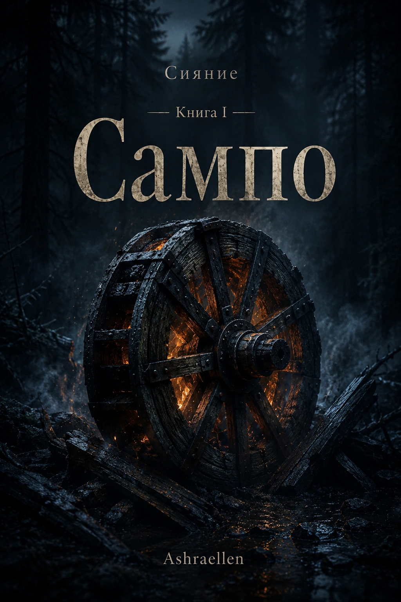

Libro I - Sampo
Abundancia, provisión, posesión y participación. El primer libro abre la serie con una pregunta sobre la fuente: ¿por qué una persona se esfuerza por poseer lo que ya vive en su interior?
Ashraellen
Ciclo literario y filosófico / artistic research through fiction
Cuentos del norte sobre la historia real del mundo. Un ciclo de largo plazo en el que una forma de arte se convierte en un modo de exploración.
No volvemos a contar "Kalevala". Mostramos el mundo del que podrían surgir este tipo de historias.
corto
Las epopeyas, los cuentos de hadas y las historias antiguas de diferentes pueblos pueden leerse como diferentes lenguajes figurados de acceso al conocimiento profundo. Cada pueblo recibió sus herramientas e instrucciones en una forma adecuada a su tierra, lengua, memoria, dolor, clima, trabajo y forma de oír el mundo.
Resplandor / "Resplandor" es una serie de investigación artística literaria y filosófica sobre cómo las historias antiguas preservan instrucciones imaginativas para el mundo.
El material finlandés-carelia y Kalevala es la principal columna vertebral norte del ciclo. Estamos tratando de comprender qué experiencia humana hizo necesarias estas imágenes y si la forma de arte puede hacer que este conocimiento sea audible y claramente comprendido nuevamente.
estructura actual

Abundancia, provisión, posesión y participación. El primer libro abre la serie con una pregunta sobre la fuente: ¿por qué una persona se esfuerza por poseer lo que ya vive en su interior?

Palabra, audición, lenguaje y sintonía. El segundo libro continúa el método "Sampo" a través del sonido y la palabra: ¿puede una palabra convertirse en escenario en lugar de ruido?
Siguiente nodo de bucle. Artesanía, forma, responsabilidad y tecnología como cuestión de qué hace una persona con poder cuando éste requiere medida.
para fondos y socios
"Resplandor" no prueba una verdad antigua como tesis. Prueba si la forma de arte puede volver a hacerla audible y claramente entendida.
"Sampo" explora la instrucción sobre abundancia y participación.
"Canto" explora la instrucción sobre el habla, la audición y la afinación.
Otros libros revelan instrucciones sobre artesanía, umbral, trauma, regreso, nacimiento, bosque, medida y responsabilidad.
Esto no es un recuento de un mito o mitología decorativa. Es un intento, a través de la novela, la escena, la cosa, el habla, el silencio y la elección humana, de devolver a la imagen antigua su fuerza de trabajo.
nodos de bucle previstos
lectores y socios
El ciclo puede resultar cercano a quienes valoran la prosa mitopoética lenta, una atmósfera norteña sin clichés fantásticos, una profundidad filosófica sin conferencias y una imagen antigua que opera a través de la vida cotidiana, el cuerpo, el lenguaje y la elección.
El proyecto está abierto a publicaciones, traducciones, editoriales, residencias y cooperación cultural, incluidas lecturas públicas, charlas y presentaciones artistic research through fiction.
límites del proyecto
“Resplandor” no es un recuento de la mitología, ni un universo de fantasía ni una enseñanza espiritual. Se trata de un ciclo artístico y de investigación literario y filosófico en el que las imágenes antiguas son consideradas como formas vivas de conocimiento.
El proyecto trabaja con el mito no como decoración, sino como memoria: con lo que ayudó a una persona a comprender el mundo, la medida, el trabajo, la palabra, el miedo, la responsabilidad y la conexión con el orden vivo de la realidad.
 - marca de presencia
- marca de presencia